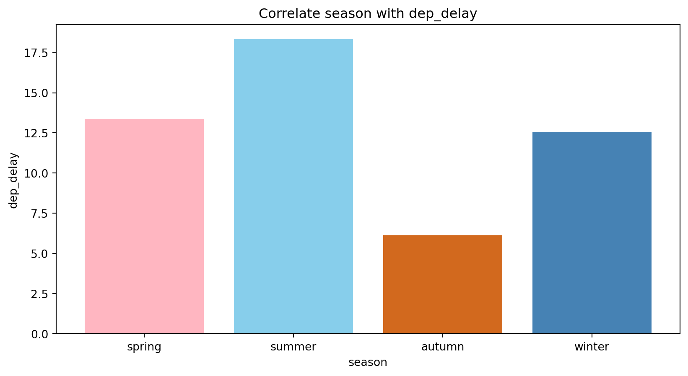

<class 'pandas.core.frame.DataFrame'>
RangeIndex: 336776 entries, 0 to 336775
Data columns (total 27 columns):
# Column Non-Null Count Dtype
--- ------ -------------- -----
0 year_x 336776 non-null int64
1 month 336776 non-null int64
2 day 336776 non-null int64
3 dep_time 328521 non-null float64
4 sched_dep_time 336776 non-null int64
5 dep_delay 328521 non-null float64
6 arr_time 328063 non-null float64
7 sched_arr_time 336776 non-null int64
8 arr_delay 327346 non-null float64
9 carrier 336776 non-null object
10 flight 336776 non-null int64
11 tailnum 334264 non-null object
12 origin 336776 non-null object
13 dest 336776 non-null object
14 air_time 327346 non-null float64
15 distance 336776 non-null int64
16 hour 336776 non-null int64
17 minute 336776 non-null int64
18 time_hour 336776 non-null object
19 year_y 278864 non-null float64
20 type 284170 non-null object
21 manufacturer 284170 non-null object
22 model 284170 non-null object
23 engines 284170 non-null float64
24 seats 284170 non-null float64
25 speed 963 non-null float64
26 engine 284170 non-null object
dtypes: float64(9), int64(9), object(9)
memory usage: 69.4+ MB뉴욕 비행장 데이터 분석
권서연, 김민채, 박재원, 오상원
7조
목차
- 분석 목표
- 데이터 병합
- 출발 지연 요인 분석
- 시간대별
- 계절별
- 날씨별
- 추가 인사이트 도출
- 결론
1. 분석 목표

- 설레는 마음으로 공항을 떠났지만 … 비행기 지연으로 슬퍼하는 …
- 비행기 출발 지연 요인을 분석해보고 출발 지연을 최대한 피할 수 있는 방법을 찾아보자!
2. 데이터 병합
- 다음과 같이 비행장 데이터
flights와planes를 병합한 데이터를 생성합니다.
2. 데이터 병합
- 병합된 데이터인
mer_dat은 다음과 같은 변수들을 가지고 있습니다.
3-1. 시간대별 출발 지연 분석
# 전처리: 출발시간, 도착시간, 지연시간이 nan 일 경우 제거
flights = flights.dropna(
subset=['dep_time', 'arr_time', 'arr_delay', 'dep_delay', 'air_time'])
# 시간대 나누는 함수
def divide_hour(hour):
if 6 <= hour < 12:
return 'morning'
if 12 <= hour < 18:
return 'lunch'
if 18 <= hour < 24:
return 'dinner'
return 'dawn'
flights['time_of_day'] = flights['hour'].apply(divide_hour)- 분류 기준: 새벽, 아침, 점심, 저녁
- 목적: 각 시간대별 지연 패턴 분석
hour time_of_day
0 5 dawn
1 5 dawn
2 5 dawn3-1. 시간대별 출발 지연 분석
3-1. 시간대별 출발 지연 분석
15분 이상 출발 지연된 비행편 살펴보기
# 15분 이상 지연된 비행기들
delayed = flights.loc[flights['dep_delay'] >= 15, :]
# 지연된 비행기 시간대별로 분류
delay_cnt = delayed.groupby('time_of_day').size()
plt.bar(['dawn', 'morning', 'lunch', 'dinner'],
delay_cnt.values[[0, 3, 2, 1]])
plt.xlabel('time')
plt.ylabel('delayed flights')
plt.title('delay by time')
plt.show()- 항공편이 많은건 아침인데?
- 저녁이 더 많이 지연되고 있음!
3-1. 시간대별 출발 지연 분석
그래서 연쇄 지연으로 저녁에 지연이 더 심한건가?
3-1. 연쇄 지연 분석
데이터 전처리 과정
# 출발 시간 기준으로 정렬
sort_ = flights.sort_values(['year','month', 'day', 'hour', 'minute'], ascending=True)
# 같은 날 이전 항공편의 도착 지연 정보 추가
sort_['prev_arr_delay'] = sort_.groupby(['year', 'month', 'day', 'flight'])['arr_delay'].shift(1)
# 해당 날에 첫 항공편이거나, 유일한 항공편 제거
sort_ = sort_.dropna(subset='prev_arr_delay')
# comprehension 사용으로 연쇄 지연 count
days = ['dawn', 'morning', 'lunch', 'dinner']
delay_counts = {time: len(sort_.loc[(sort_['time_of_day'] == time) &
(sort_['dep_delay'] >= 15) &
(sort_['prev_arr_delay'] >= 15), :])
for time in days}3-1. 연쇄 지연 분석
데이터 시각화
# 파이 차트 그리기
plt.figure(figsize=(7, 7))
colors = ["#c4b5fd", "#bef264", "#fdba74", "#155e75"]
plt.pie(delay_counts.values(),
labels=days,
autopct=lambda p: f'{p:.1f}%' if p > 0 else '',
startangle=90,
colors=colors,
wedgeprops={"edgecolor": "#52525b"})
plt.title("cascade delay")
plt.legend(days, title="Time Periods", loc="upper right")
plt.show()3-2. 계절별 출발 지연 시간
#| echo: true
spring = mer_dat.loc[(mer_dat['month'] >= 3) & (mer_dat['month'] <= 5)]
summer = mer_dat.loc[(mer_dat['month'] >= 6) & (mer_dat['month'] <= 8)]
autumn = mer_dat.loc[(mer_dat['month'] >= 9) & (mer_dat['month'] <= 11)]
winter = mer_dat.loc[(mer_dat['month'] == 12) | (mer_dat['month'] <= 2)]
# 봄: 3~5월, 여름: 6~8월, 가을: 9~11월, 겨울: 12~2월로 설정
seasons = ['spring', 'summer', 'autumn', 'winter']
delays = [spring['dep_delay'].mean(),
summer['dep_delay'].mean(),
autumn['dep_delay'].mean(),
winter['dep_delay'].mean()]
# 각 계절별 평균 출발 지연 시간을 y축으로 설정
colors = ['#FFB6C1', '#87CEEB', '#D2691E', '#4682B4']
plt.bar(seasons, delays, color = colors)
plt.ylabel('dep_delay')
plt.xlabel("season")
plt.title('Correlate season with dep_delay')
plt.show()3-2. 계절별 출발 지연 시간

- 여름이 가장 높은 지연 시간을 가지고, 가을이 가장 낮은 지연 시간을 가진다.
3-2. 계절별 출발 지연 시간

지연이 다수 발생한다.
3-2. 계절별 출발 지연 시간
상태를 유지하기 힘들다.
3-2. 계절별 출발 지연 시간
3-3. 날씨와 지연 시간의 관계 분석
날씨가 좋은날보다 흐린날, 비행기 지연 시간이 더 길겠지?

3-3. 날씨와 지연 시간의 관계 분석
# 데이터 병합 (비행 + 날씨)
flights_weather = pd.merge(flights, weather, on=['year', 'month', 'day', 'hour', 'origin'], how='inner')
# 결측치 제거
flights_weather = flights_weather.dropna(subset=['arr_delay', 'dep_delay'])
# 사분위수 계산
q1_gust, q3_gust = flights_weather['wind_gust'].quantile([0.25, 0.75])
q1_speed, q3_speed = flights_weather['wind_speed'].quantile([0.25, 0.75])
q1_visib, q3_visib = flights_weather['visib'].quantile([0.25, 0.75])
# 날씨가 나쁜 경우 (상위 25%의 돌풍 & 바람 속도, 하위 25%의 가시거리)
bad_weather = flights_weather.loc[
(flights_weather['wind_gust'] >= q3_gust) &
(flights_weather['wind_speed'] >= q3_speed) &
(flights_weather['visib'] <= q1_visib)
]
# 날씨가 좋은 경우 (하위 25%의 돌풍 & 바람 속도, 상위 25%의 가시거리)
good_weather = flights_weather.loc[
(flights_weather['wind_gust'] <= q1_gust) &
(flights_weather['wind_speed'] <= q1_speed) &
(flights_weather['visib'] >= q3_visib)
]3-3. 날씨와 지연 시간의 관계 분석
데이터 시각화
x = ['bad weather', 'good weather']
y = [np.nanmean(bad_weather['dep_delay']), np.nanmean(good_weather['dep_delay'])]
# 막대그래프 그리기
plt.figure(figsize=(6, 4))
plt.bar(x, y, color=['red', 'blue'], alpha=0.7, edgecolor='black')
# 그래프 스타일 적용
plt.xlabel("Weather Condition")
plt.ylabel("Average Departure Delay (minutes)")
plt.title("Impact of Weather on Departure Delay")
plt.ylim(0, max(y) * 1.2) # Y축 범위를 최대값 기준으로 설정
plt.grid(axis='y', linestyle='--', alpha=0.6)
# 그래프 출력
plt.show()3-3. 날씨와 지연 시간의 관계 분석
- 예상대로 날씨가 안좋을때 지연시간이 길어진다.
- 나쁜 날씨일 때 지연시간이 1.74배 정도 길다.
4. 엔진 개수와 좌석수의 관계
가설: 엔진 개수가 많을수록,좌석수가 많아질 것이다
4-1. 꺾은선 그래프로 시각화
# 꺾은선 그래프 그리기
plt.figure(figsize=(5, 5))
plt.plot(engines_seats.index, engines_seats.values,
marker='o', linestyle='-', color='b')
# 각 점에 라벨 추가
for x, y in engines_seats.items():
plt.text(x + (0.1 if x == 1.0 else -0.4), y,
## 엔진 한 개일 때는 x+0.1 좌표에
## 나머지는 x-0.4 좌표에 위치
f"{y:.1f}", fontsize=10, color="black")
# 축과 제목 설정
plt.xticks(engines_seats.index)
plt.xlabel("Number of Engines")
plt.ylabel("Average Seats")
plt.title("Average Seats by Number of Engines")
plt.grid(True, linestyle="--", alpha=0.7)
plt.show()4-1. 꺾은선 그래프로 시각화
박스 플롯(Box Plot)으로 좌석 수의 분포를 살펴보자!
4-2. 박스플롯으로 분포 확인
산점도(Scatter Plot)를 추가해 개별 데이터 분포를 더 자세히 확인해보자!
4-2 박스플롯에 스캐터플롯 추가
plt.figure(figsize=(6, 5))
sns.boxplot(x="engines", y="seats", data=data,
hue="engines", palette="Blues", width=0.5)
# 엔진 3개, 4개짜리만 따로 필터링해서 산점도 추가
sns.stripplot(x="engines", y="seats",
data=data[(data["engines"] >= 3)],
color="red", alpha=0.5,
jitter=0.1, size=6)
## jitter: x값이 같은 데이터를 한 줄로 표시
# 라벨 & 스타일 설정
plt.xlabel("Number of Engines")
plt.ylabel("Seats")
plt.title("Seats Distribution by Number of Engines")
plt.grid(axis="y", linestyle="--", alpha=0.7)
plt.show()4-3 박스플롯, 스캐터플롯 해석
4-3 박스플롯, 스캐터플롯 해석
4-4. 왜 예상과 다를까?
d = data.loc[
(data['engines'] >= 3) & (data['seats'] <= 120),
['engines', 'manufacturer', 'model', 'seats']
].drop_duplicates(subset=['model'])
print(d) engines manufacturer model seats
3685 4.0 CANADAIR LTD CF-5D 2.0
24879 4.0 DOUGLAS DC-7BF 102.0
101981 3.0 AVIONS MARCEL DASSAULT MYSTERE FALCON 900 12.0